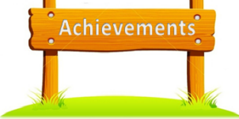

NRIKD Gold Medal
Received a gold medal from the National Research Institute for Knowledge Development in the field of Computer Science.
The thread is not a single specialty. It is the willingness to prepare deeply for very different arenas.
Received a gold medal from the National Research Institute for Knowledge Development in the field of Computer Science.
Qualified for the final round of the Science Olympiad in 2008.
Qualified in Google Code Jam 2014 and competed in Plinth ’15, an inter-university programming contest.
University representation, a Zone-A intercollegiate win, and a runner-up finish across competitive tournaments.
Won the South Zone Handball tournament and qualified for the national tournament at IIS Jaipur.
Recognized as an Arctic Code Vault Contributor and Pull Shark on a public profile with 26 repositories.
Between 2024 and 2026, the learning path expanded through Microsoft Azure certifications, LLM engineering, agentic AI, and community participation.

The useful milestone is the one that increases what you are ready to attempt next.
I’m looking for the next problem that deserves preparation across engineering, product, cloud, and AI.